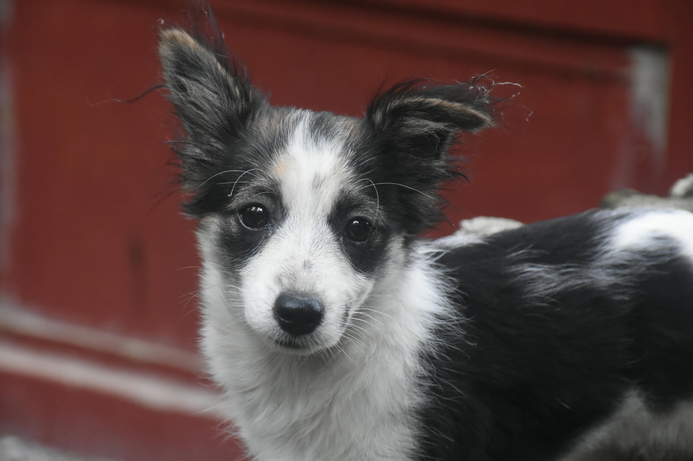
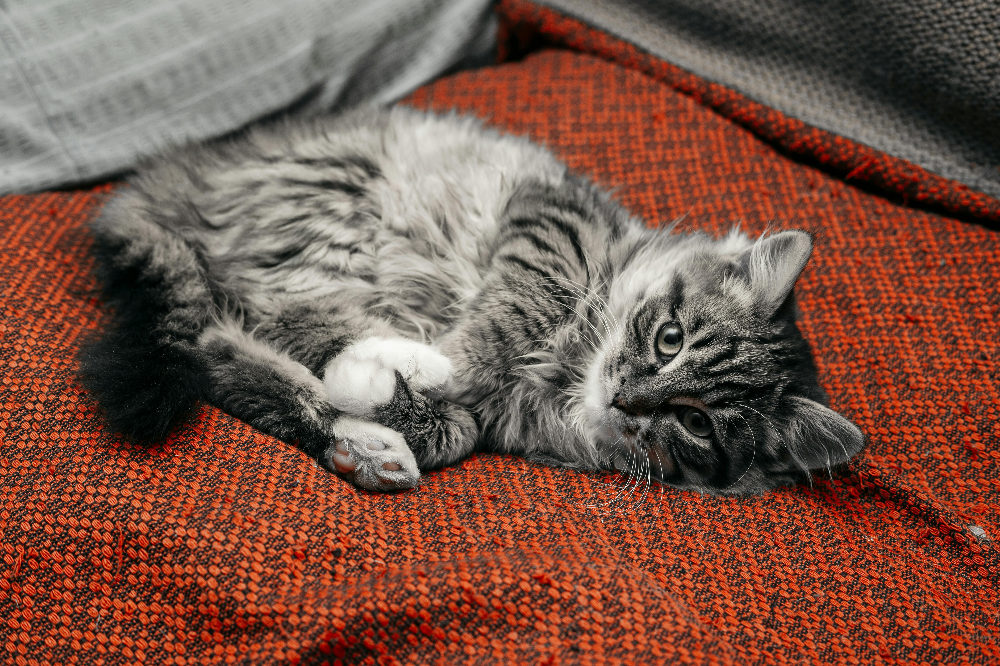
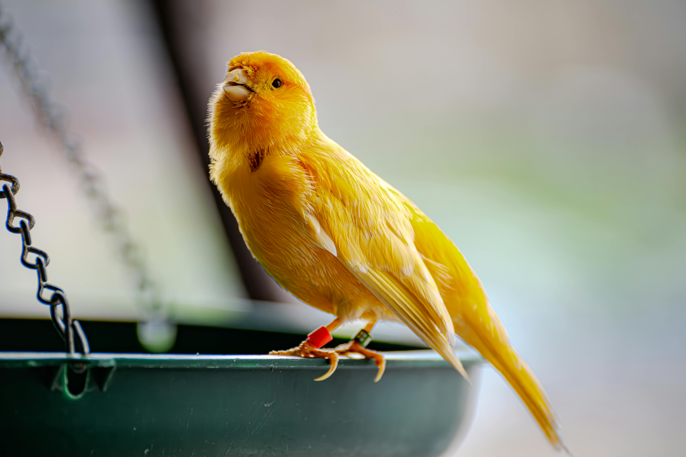
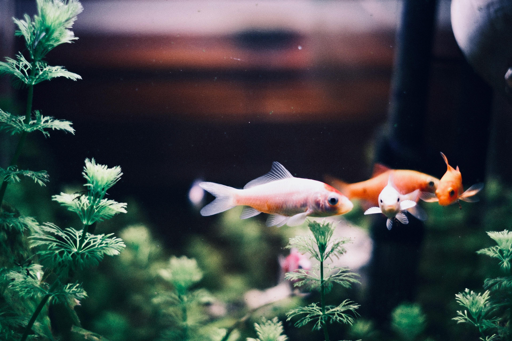

Conheça alguns dos animais que atendemos e cuidamos aqui no Pet Shop Lulu.

Os cachorros são companheiros leais e fazem parte da família de muitas pessoas. No Pet Shop Lulu oferecemos cuidados completos para cães de todas as raças e tamanhos.
Temos produtos, serviços de banho e tosa e acessórios especiais para garantir a saúde e o bem-estar dos cães.

Os gatos são animais independentes, mas também precisam de cuidados especiais. No Pet Shop Lulu oferecemos alimentos específicos, areia higiênica e produtos de higiene.
Nossa equipe também está preparada para realizar banho e cuidados básicos para gatos com segurança e carinho.

Os pássaros são animais delicados e muito queridos por seus donos. Aqui no Pet Shop Lulu você encontra alimentos apropriados e acessórios para o cuidado dessas aves.
Também oferecemos orientações sobre alimentação e cuidados necessários para manter os pássaros saudáveis.

Os peixes são animais ideais para quem busca tranquilidade e beleza em casa. Oferecemos alimentos, acessórios para aquários e orientações sobre cuidados com peixes ornamentais.
Nosso objetivo é ajudar você a manter um aquário saudável e bonito para seus peixes.
Quer saber mais sobre nossos serviços e produtos? Fale conosco!